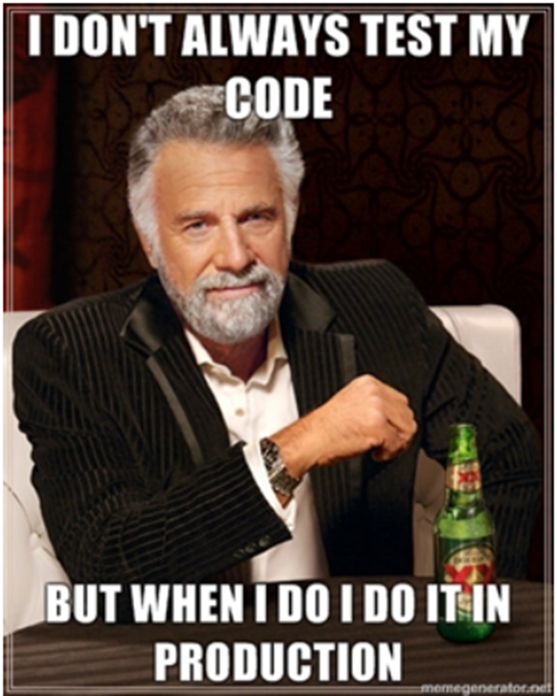
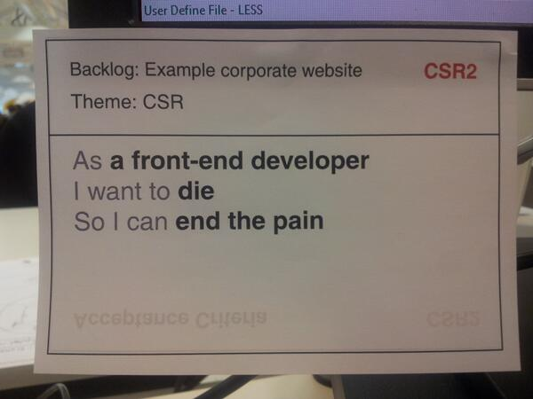

Intro to Codeception for BDD Testing
Modern PHP testing for everyone.
By Darren Nolan / @DarrenNolan_

BDD?
Behavior Driven Development
- developed by Dan North in 2007(ish)cause he totes hated TDD
- was based upon Test Driven Development better said, the fixes the shortcomings he had when teaching TDD
- is mostly changing the way tests are talked about and described
- could be considered as 'TDD done right'
- Revolves around Specs/User Stories


So...
We have 
Made ~2010
'A php framework for testing your business expectations'.
Feature: Search
In order to see a word definition
As a website user
I need to be able to search for a word
Scenario: Searching for a page that does exist
Given I am on "/wiki/Main_Page"
When I fill in "search" with "Behavior Driven Development"
And I press "searchButton"
Then I should see "agile software development"
Which is really nice and awesome
But...
It's almost another language/style to learn
And can get a little complicated implementing your own sentences back in PHP...
/**
* @Then /^I wait for the suggestion box to appear$/
*/
public function iWaitForTheSuggestionBoxToAppear()
{
$this->getSession()->wait(5000,
"$('.suggestions-results').children().length > 0"
);
}
to then use it in your stories
Scenario: Searching for a page with autocompletion
Given I am on "/wiki/Main_Page"
When I fill in "search" with "Behavior Driv"
And I wait for the suggestion box to appear
Then I should see "Behavior-driven development"
Introducing Codeception
Install the framework
php composer.phar require "codeception/codeception:*"
Bootstrap Codeception
vendor/bin/codecept bootstrap
Generate an acceptance test
vendor/bin/codecept generate:cept acceptance Homepage
Write some PHP!
<?php
$I = new WebGuy($scenario);
$I->wantTo('Load up the home page and make sure I see the header');
$I->amOnPage('/');
$I->see('Welcome to the home page!');
But it's more than just acceptance testing...
Unit Tests!
Which everyone does, all the time, because we're awesome.
vendor/bin/codecept generate:test unit ExampleUnitTest
<?php
use Codeception\Util\Stub;
class SymfonyMeetupUnitTest extends \Codeception\TestCase\Test
{
protected $codeGuy;
protected function _before() {}
protected function _after() {}
public function checkDatabaseForUser()
{
$user = new User;
$user->name = 'Dazz';
$user->dob = 1980;
$user->password = 'super-secret-squirrel';
$user->save();
// Making sure we're aging well.
$this->assertEquals( date("Y") - $user->dob, $user->getAge() );
// Awesome DB Helper Functions
$this->codeGuy->seeInDatabase('users', ['name' => 'Dazz', 'dob' => 1980]);
}
}
Exactly the same as normal PHPUnit tests, but you can use some nifty helper functions
Functional Testing
Like acceptance testing, without the full headless-browser
so crazy quick using HttpKernel. (Lacks Javascript Parsing)
vendor/bin/codecept generate:cept functional symfonyFunctional
<?php
$I = new TestGuy($scenario);
$I->amOnPage('/');
$I->click('Sign Up');
$I->fillField('firstname', 'Darren');
$I->fillField('lastname', 'Nolan');
$I->click('Sign Up');
$I->dontSee('Registration Failed');
$I->see('Welcome Darren Nolan');
and of course...
Acceptance Testing
vendor/bin/codecept generate:cept acceptance testingHomepageJavascript
<?php
$I = new WebGuy($scenario);
$I->amOnPage('/');
// Trigger Ajax Loading
$I->click('Check Exchange Rate');
// See user feedback immediately after click
$I->see('loading exchange');
// Wait for this loading element to disappear - give ourselves 10 seconds to do so
$I->waitForElementNotVisible('#exchange-rate .loading', 10);
// See that the exchange rate loaded.
$I->see('Your exchange rate is');